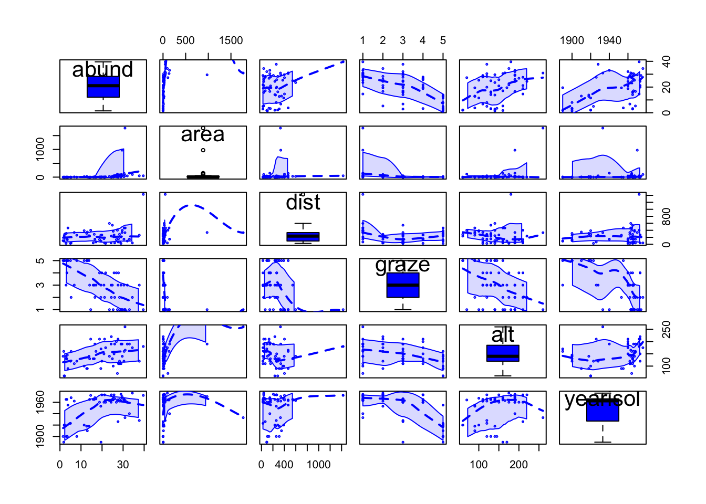
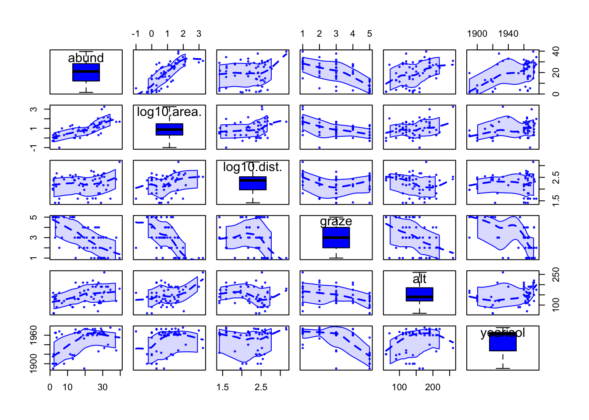

31 Mon Nov 23 - Model selection
Akaike Information Criteria (AIC) is a type of model selection and this is explained in Dr. Schneider’s notes here.
My comments on these notes are that:
for nested models we should use the likelihood ratio test because the likelihood ratios for the models are chi-squared distributed Bolker 2007, Ch 6.6.1 starting on p271. However, if there are many explanatory variables, it is likely that some of the model comparisons you want to do are not nested, and so you need to use AIC.
\(\Delta\)AIC values for the basis of decision are: <2: Models are indistinguishable; 4-7: some support that models are indistinguishable from the best model and these models should not necessarily be discarded; > 10 models are different. For justificaiton see Bolker 2007, p278.
We are learning about model selection in the context of making decisions about how many explanatory variables to include in our models. This is covered in Quinn and Keough Ch 9 Predictor importance and model selection in multiple regression models. The .html corresponding to the R markdown for Box 9.1 of Quinn and Keough is here.
In this example, we want to understand which explanatory variables explain bird abundance.
require(dplyr)
loyn = read.csv("https://raw.githubusercontent.com/ahurford/biol-4605-data/refs/heads/main/data/loyn.csv")
loyn = loyn%>%select(abund, area, yearisol, dist, distl, graze, alt)
head(loyn,10) # just the first 10 rows because the whole dataset is very long.## abund area yearisol dist distl graze alt
## 1 5.3 0.1 1968 39 39 2 160
## 2 2.0 0.5 1920 234 234 5 60
## 3 1.5 0.5 1900 104 311 5 140
## 4 17.1 1.0 1966 66 66 3 160
## 5 13.8 1.0 1918 246 246 5 140
## 6 14.1 1.0 1965 234 285 3 130
## 7 3.8 1.0 1955 467 467 5 90
## 8 2.2 1.0 1920 284 1829 5 60
## 9 3.3 1.0 1965 156 156 4 130
## 10 3.0 1.0 1900 311 571 5 130Quinn and Keough begin by assessing colinearity in explanatory variables and if explanatory variables have a skewed distribution.
scatterplotMatrix(~abund+area+dist+graze+alt+yearisol, data=loyn, cex=0.33, regLine=FALSE, diagonal=list(method='boxplot'))
The assessment is that the explanatory variables are not sustantially colinear, but area and distance are quite skewed as so we explore the logarithm of these variables to correct for the skewedness.scatterplotMatrix(~abund+log10(area)+log10(dist)+graze+alt+yearisol, data=loyn, cex=0.33, regLine=FALSE, diagonal=list(method='boxplot'))
We add in the log variables to our dataset.
We assess colinearity by finding the correlatin matrix. The diagonal elements are variance and the off-diagional elements are co-variances.
We also calculate the variance inflation factors to understand the contribution of each explanatory variable to the variance explained by the full model.
## logarea logdist graze alt yearisol
## logarea 1.0000000 0.30216662 -0.5590886 0.2751428 0.27841452
## logdist 0.3021666 1.00000000 -0.1426392 -0.2190070 -0.01957223
## graze -0.5590886 -0.14263922 1.0000000 -0.4071671 -0.63556710
## alt 0.2751428 -0.21900701 -0.4071671 1.0000000 0.23271541
## yearisol 0.2784145 -0.01957223 -0.6355671 0.2327154 1.00000000## logarea logdist graze alt yearisol
## 1.619373 1.265608 2.522813 1.364838 1.73531831.1 Akaike information criteria
The models below are the output of Quinn and Keough’s analysis in Box 9.1.
The top five models are indistingishable because the \(\Delta\)AIC is < 2. Some of these models have more variables, but adding in these additional variables does improve the fit because the Delta AIC (\(\Delta\)AIC) is less than 2.
These top five models involve the variables:
- m1: log area, grazing and year isolated;
- m2: log area, grazing, altitude and year isolated;
- m3: log area, and grazing;
- m4: log area, log distance, grazing, and year isolated;
- m5: log area, altitude, and year isolated.
This packages will output a nice AIC table to summarize our model selection analysis:
##
## Attaching package: 'AICcmodavg'## The following object is masked from 'package:bbmle':
##
## AICc## The following object is masked from 'package:lme4':
##
## checkConv# 1. Fit candidate models (must use the exact same dataset/response variable)
m1 <- lm(abund ~ logarea+graze+yearisol, data = loyn)
m2 <- lm(abund ~ logarea+graze+alt+yearisol, data = loyn)
m3 <- lm(abund ~ logarea+graze, data = loyn)
m4 <- lm(abund ~ logarea+logdist+graze+yearisol, data = loyn)
m5 <- lm(abund ~ logarea+alt+yearisol, data = loyn)
# 2. Bundle models into a list and define names
models <- list(m1, m2, m3,m4,m5)
# 3. Generate the model selection table
aictab(cand.set = models)##
## Model selection based on AICc:
##
## K AICc Delta_AICc AICcWt Cum.Wt LL
## Mod1 5 372.31 0.00 0.32 0.32 -180.55
## Mod2 6 373.24 0.93 0.20 0.52 -179.76
## Mod3 4 373.30 0.99 0.20 0.72 -182.26
## Mod4 6 373.86 1.55 0.15 0.87 -180.07
## Mod5 5 374.06 1.75 0.13 1.00 -181.43To better understand how the AIC and AICc values are calculated note that the log likelihood is an output of the lm() command. \(k\) is the number of parameters in the model, which is one for each explanatory variable, one for the intercept, and in this example, one for the fitted residual variance. \(n\) is the sample size.
The formula for AIC is for model \(i\) is:
\[\mbox{AIC}_i = 2k - \mbox{LL}(m_i) \]
The best and most parsimonious model has the lowest AIC. The Delta AIC is calculated relative to the best model (i.e., by subtracting the AIC of the best model).
The AICc is a correction for a small sample size and is calculated as:
\[\mbox{AICc} = \mbox{AIC} + \frac{2k(k+1)}{n-k-1}\]
A rough guide is to use AICc when \(n < 25\), but you can consult Burnham and Anderson for more precise advice.
##
## Call:
## lm(formula = abund ~ logarea + graze + yearisol, data = loyn)
##
## Residuals:
## Min 1Q Median 3Q Max
## -14.5159 -3.8136 0.2027 3.1271 14.5542
##
## Coefficients:
## Estimate Std. Error t value Pr(>|t|)
## (Intercept) -134.26065 86.39085 -1.554 0.1262
## logarea 7.16617 1.27260 5.631 7.32e-07 ***
## graze -1.90216 0.87447 -2.175 0.0342 *
## yearisol 0.07835 0.04340 1.805 0.0768 .
## ---
## Signif. codes: 0 '***' 0.001 '**' 0.01 '*' 0.05 '.' 0.1 ' ' 1
##
## Residual standard error: 6.311 on 52 degrees of freedom
## Multiple R-squared: 0.6732, Adjusted R-squared: 0.6544
## F-statistic: 35.71 on 3 and 52 DF, p-value: 1.135e-12## 'log Lik.' -180.5546 (df=5)## [1] 371.1092## [1] 372.3092## [1] 371.1092## [1] 372.3092